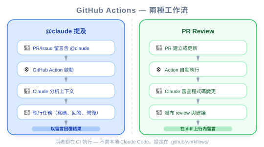
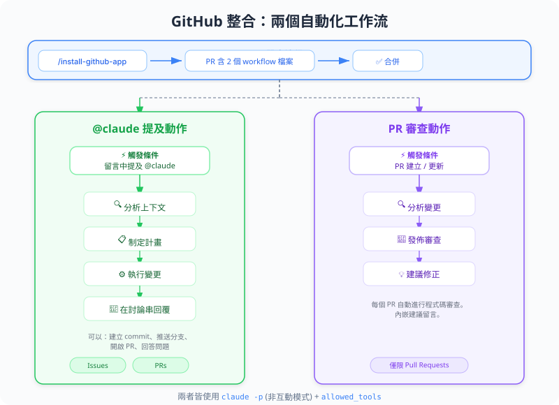
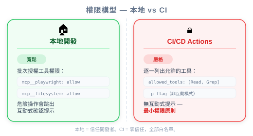

| 項目 | 內容 |
|---|---|
| 考試對應 | D3 — Claude Code Configuration & Workflows（佔 20%） |
| Task Statements | 3.6 ★★★（CI/CD integration）、2.4 ★★（MCP integration）、1.1 ★（agentic loops） |
| 課程來源 | claude-code-in-action / 04-integrations / Lesson 13 |
Claude Code 的 GitHub 整合把 Claude 變成住在你 GitHub workflow 裡的自動化團隊成員。兩個能力：(1) 在 issue/PR 裡 @claude 提及觸發互動式任務執行，(2) 每個 PR 自動 review。PM 需要理解這個，因為它定義了 AI 如何融入 code review 和 CI/CD 流程 — 以及權限治理該怎麼做。
@claude mention 改變了開發者跟 issue 和 PR 互動的方式
| 角色 | 人類對應 | Claude GitHub 整合 |
|---|---|---|
| PR Reviewer | 資深工程師 review 程式碼 | PR Review Action — 自動、一致 |
| Issue Responder | On-call 工程師 triage bug | @claude mention — 即時、自主 |
| QA Tester | Merge 前手動測試 | Claude + Playwright — 自動化視覺測試 |
| 記錄者 | 工程師記錄調查結果 | Claude 在 issue/PR 貼出詳細報告 |
🎯 考試核心哲學（PM 必記）
- 自動化 code review 是結構性地抓問題 — 每次都跑，不是靠人記得
-pflag = 非互動模式 — Claude 不需人工核准就運行，所以權限必須明確- Architecture > Prompt — 結構化的 CI 整合勝過叫開發者記得去 review
@claude Mention — 互動式任務執行任何人都可以在 issue 或 PR 留言中提及 @claude 來觸發 Claude。Claude 會：
- 分析請求
- 建立 step-by-step 計畫（在留言中可見）
- 執行計畫（跑程式碼、測試 app、讀檔案）
- 在 issue/PR 裡回報結果
PM 應用場景：Bug triage — QA 工程師截圖一個 bug，提及 @claude，Claude 調查、測試、回報，不需要開發者介入。
每個 PR 自動觸發 Claude review 變更。Claude 會：
- 分析 diff
- 檢查潛在問題
- 貼出結構化的 review
PM 應用場景：品質關卡 — 不管團隊忙不忙，每個 PR 都有基本 review。在時間壓力下人類可能遺漏的結構性問題，自動化 review 都能抓到。
💡 PM 決策框架
把這兩個想成不同的產品能力：
-@claudemention = 隨需 AI agent（reactive，使用者觸發）
- PR review = 自動化品質關卡（proactive，always-on）
你不需要寫 YAML，但要理解每個設定層控制什麼：
| 設定層 | 做什麼 | PM 該關心的 |
|---|---|---|
custom_instructions |
告訴 Claude CI 環境的資訊 | 確保 Claude 知道你的測試基礎設施 |
mcp_config |
給 Claude 存取工具（例如 Playwright） | 決定 Claude 能做什麼 |
allowed_tools |
控制 Claude 可以使用哪些工具 | 安全治理 — 每個工具明確列出 |
| Setup 步驟 | 在 Claude 運行前準備環境 | 確保 app 已啟動讓 Claude 測試 |
💡 PM Takeaway
allowed_tools設定是權限邊界。在 CI/CD 裡，每個工具都必須逐一列出——沒有「允許全部」的選項。這是刻意的安全設計。如果團隊加了新的 MCP 工具，allowed_tools清單也必須更新。
| 面向 | GitHub 整合前 | GitHub 整合後 |
|---|---|---|
| PR Review 覆蓋率 | 取決於 reviewer 是否有空 | 100% — 每個 PR 都被 review |
| Bug Triage 回應時間 | 數小時（等開發者調查） | 數分鐘（Claude 立即調查） |
| 程式碼品質一致性 | 因 reviewer 而異 | 標準化 — Claude 用同樣方式檢查每個 PR |
| 開發者 context switching | 頻繁（review 請求打斷 flow） | 減少 — Claude 處理第一輪 review |
@claude 觸發時，Claude 會在留言中貼出步驟 checklist。這個透明度對建立團隊信任很重要。你的團隊想在 GitHub Actions 加自動化 PR review。工程師問能不能用跟本地開發一樣的權限設定（.claude/settings.local.json 裡的 mcp__playwright）。你怎麼回答？
allowed_tools 逐一列出。CI 模式沒有 blanket server-level permissionmcp__playwright 加到 .claude/settings.json（project shared）而不是 localQA 團隊透過建 GitHub issue 附截圖來回報 bug。目前每個 bug 都需要開發者手動調查。Claude Code 的 GitHub 整合怎麼幫忙？
@claude mention 支援，讓 QA 可以直接在 issue 裡觸發 Claude 調查 bug，包含透過 Playwright 做瀏覽器測試